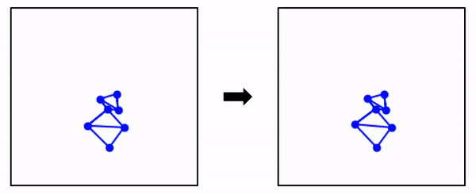
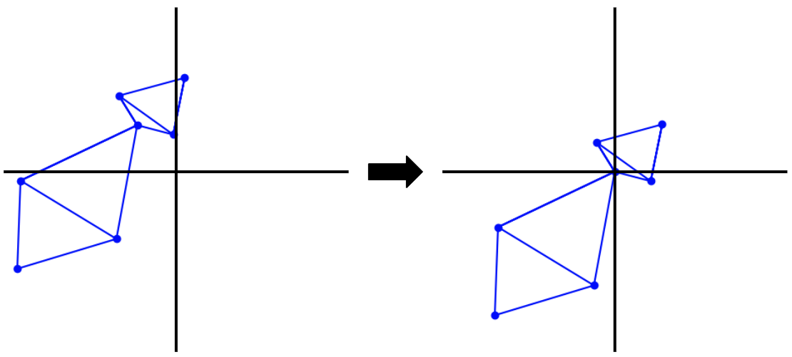

lib.util.datasets.mouse_v1¶
- class lib.util.datasets.mouse_v1.core.MouseV1Dataset(data_config)¶
Basic dataset object for handling SINGLE mouse MARS keypoint estimates
- __init__(data_config)¶
- Parameters:
data_config (dict) –
- A dictionary containing the following dataset attributes:
- root_data_dir: str
The root directory to look for MARS keypoint estimates. See <add link> note on how to structure directories for search to work properly
- dataset_type: str
The type of dataset to load (e.g. ‘mouse_v1’) - used in the load_dataset method <add link>
- traj_len: int
The length of the trajectory to use for training i.e. the number of frames to use in each video.
- load_data(data_config)¶
Loads the dataset from the specified root directory and convert videos into trajectories of length specified by
data_config[traj_len].Notes
This method assumes that there are two sets of keypoint estimates in the
.jsonfiles output by MARS, both representing the same mouse.
- Parameters:
data_config (dict) – A dictionary containing the attributes explained in the constructor.
- Returns:
trajectories – Array of shape
[num_trajs, traj_len, n_features]of pose trajectories.- Return type:
np.array
- med_filter(trajectories, kernel_size=7)¶
Applies a median filter over time to the trajectories to remove noise in the pose estimates.
- Align:
center
- Parameters:
trajectories (np.array) – Array of shape
[num_trajs, traj_len, n_features]of pose trajectories to filter- Returns:
filtered_trajectories – Array of shape
[num_trajs, traj_len, n_features]of filtered pose trajectories- Return type:
np.array
- static plot_reconstruction(orig, recon, path='./gifs/recon.gif')¶
Plot original and reconstructed trajectories on the same plot
- static plot_trajectory(seq, path='./gifs/traj.gif')¶
Plots a single mouse trajectory.
- postprocess(trajectories)¶
Takes one or more preprocessed trajectories and reconstructs them from the decomposed pose and singular vectors.
- Parameters:
trajectories (np.array) – Array of shape
[num_trajs, traj_len, n_features]or[traj_len, n_features]of pose trajectories to reconstruct- Returns:
reconstructed_trajectories – Array of shape
[num_trajs, traj_len, n_features]or[traj_len, n_features]of reconstructed pose trajectories- Return type:
np.array
- preprocess(data_config, trajectories)¶
Notes
Preprocesses single mouse trajectories using the following steps:
- Centroid alignment:
Aligns each trajectory such that the neck base of the mouse in the first frame is aligned with the origin.
- Rotational alignment:
Aligns each trajectory such that the vector formed by the neck base and the tail base is aligned with the y-axis.
- Decomposition:
Combines all trajectories into one pose matrix
Centers the poses such that the neck base is at the origin and stores the original coordinates of the neck base
Rotates the poses such that the vector formed by the neck base and the tail base is aligned with the y-axis and stores the sine and cosine of the rotation angle.
Performs SVD and for each aligned pose, stores the weights associated with the right singular vectors needed to reconstruct the pose.
Concatenates the extracted centroid position, angle of rotation and the weights associated with the right singular vectors into a single matrix.
Splits the resulting matrix back up into its original trajectories and returns.
- Parameters:
data_config (dict) – A dictionary containing the attributes explained in the constructor
trajectories (np.array) – Array of shape
[num_traj, traj_len, n_features]pose trajectories to preprocess
- Returns:
trajectories – Array of shape
[num_traj, traj_len, n_features]of centroid and body-angle registered pose trajectories- Return type:
np.array
- register_mars_trajectory_angles(trajectories, traj_len=61)¶
- Register the angle formed by the body vector and the
y-axis on the starting frame
- Align:
center
- Parameters:
trajectories (np.array) – Array of shape (
[num_traj, traj_len, n_features]) pose trajectories to register.
- register_mars_trajectory_centroids(trajectories, traj_len=61)¶
Register the pose centroids on the starting frame
- Align:
center
- Parameters:
trajectories (np.array) – Array of shape (
[num_traj, traj_len, n_features]) pose trajectories to register.
- register_pose_trajectories(trajectories, traj_len=61)¶
Register the pose trajectories w.r.t. centroid and body angle this function calls
register_mars_trajectory_centroidsandregister_mars_trajectory_body_angles.- Parameters:
trajectories (np.array) – Array of shape
[num_trajs, traj_len, num_feats]of pose trajectories to register